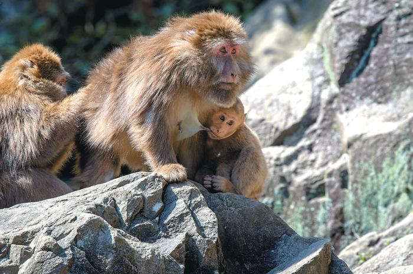
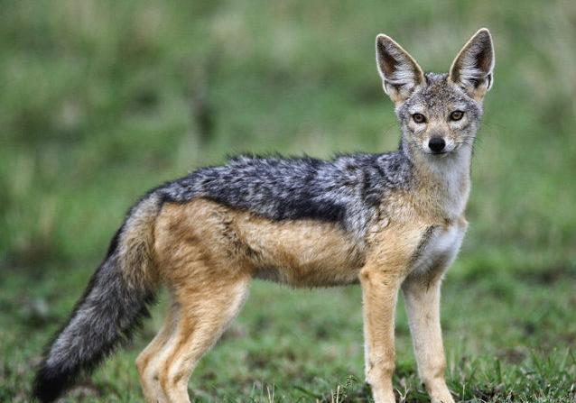
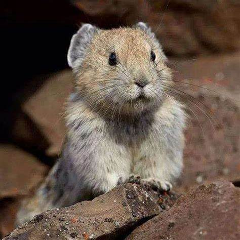
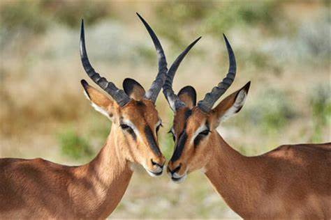
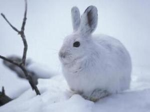
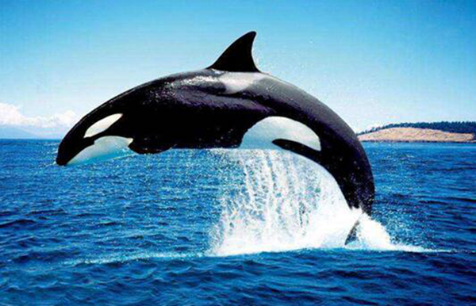
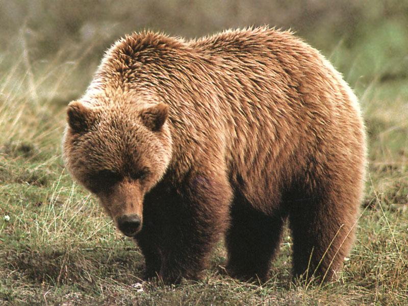

短尾猴（学名：Macaca arctoides），也称红面猴，是体型较大的一种猕猴，体重5千克，体长50-56厘米，尾极短；颜面部常为暗红色或带紫红色斑块；

亚洲胡狼（学名：Canis aureus aureus）是金豺的指名亚种，体型中等、匀称，四肢修长，趾行性，利于快速奔跑。头腭尖形，颜面部长，鼻端突出，耳尖且直立，嗅觉灵敏，听觉发达。
赤狐（学名：Vulpes vulpes）：是犬科、狐属动物。共有47个亚种。成兽体长62 - 72厘米，肩高40厘米，尾长20-40厘 ，体重5-7千克。毛色因季节和地区不同而有较大变异，一般背面棕灰或棕红色.

伊犁鼠兔（学名：Ochotona iliensis）是一种体型娇小的山地哺乳动物，约20厘米长，长有大大的耳朵，灰色的皮毛上散落着些许棕色斑点。仅存于中国新疆，是高原生态系统中的一个群体。

长尾斑羚（学名：Naemorhedus caudatus）：是哺乳纲、牛科、羊亚科的动物。体长1060-1200毫米，肩高690-750毫米，尾长130-160毫米，体重32-42千克。
东亚江豚（学名：Neophocaena sunameri）：是最小的鲸目动物，只生长到150-190厘米。头部较短，近似圆形，额部稍微向前凸出，吻部短而阔，上下颌几乎一样长，牙齿短小。
熊猴（学名：Macaca assamensis），是灵长目猕猴属下的一种猴子。体型大小与猕猴相似，体重10-15kg，体长500-700mm；尾长约为体长的1/3。与猕猴的不同在于颜面部相对较长，眉弓较高而突出。
马鹿（学名：Cervus canadensis）：是鹿科、鹿属的哺乳动物，是仅次于驼鹿的大型鹿类，共有8个亚种，因为体形似骏马而得名。
水獭，是食肉目鼬科水獭属哺乳动物。水獭体形细长，四肢短而圆；头部扁而略宽；全身毛短而密，具丝绢光泽；体背和尾部棕黑或咖啡色，腹面毛长，呈浅棕色。 [14] 水獭又称獭猫、鱼猫、水狗、水毛子、水猴。

雪兔（拉丁学名：lepus timidus），是寒带、亚寒带代表动物之一，是一类个体较大的野兔，体长一般在510毫米左右。耳朵短，尾巴亦短

虎鲸，是鲸偶蹄目海豚科虎鲸属 [19] 哺乳动物 [20] 。成体体重6600千克，平均体长6-9米；头部略圆，具有不明显的喙或无喙；虎鲸头大，黑白色相间，视若虎，故名

棕熊（学名：Ursus arctos）：是食肉目、熊科动物。亦称灰熊。是陆地上食肉目体形最大的哺乳动物之一,主要栖息在寒温带针叶林中，多在白天活动，行走缓慢，没有固定的栖息场所，平时单独行动。


![ 虎鲸 Orcinus orca 虎鲸，是鲸偶蹄目海豚科虎鲸属 [19] 哺乳动物 [20] 。成体体重6600千克，平均体长6-9米；头部略圆，具有不明显的喙或无喙；虎鲸头大，黑白色相间，视若虎，故名](images/虎鲸.jpg){kind=link}